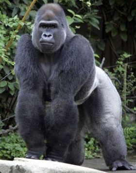
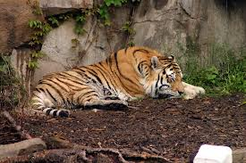

| Animal |
Name of Animal |
Descriptions |
|  |
Gorilla |
Gorillas are the brightest among the largest extent of the primates. They are ground-abiding, herbivorous apes that live around the forests of central Africa. They are divided by two species and either four or five subspecies. From research we have found that the DNA or gorillas is very similar to that of humans. They are believed to be the next closest living relatives to humans after the common chimpanzee. |
|  |
Tiger |
The weight of a male tiger is very close to 500 LBS whereas the female tiger is around 300 LBS. Their length can be around 3.1 meters for males and 2.43 meters for females. This is depended on where the tigers are located. The tigers that live around the cold regions are normally whiter and larger than those that are in the jungle. This is because their furs are much thicker and longer. But during the summer months they are usually smaller and much more colorful since their long, thick, paler fur has begun to shed.
|
 |
Chimpanzee |
The chimpanzee species are normally seen with pinkish black faces, and their bodies are covered in long black hair. The chimpanzees are considered quadrupedal (which means they can walk on all fours or just stand upright) since they have thumbs on their hands and feet it makes it much easier to grasp objects. |
|
Northern Bald Eagle |
The Great American bird: The Northern Bald Eagle. This bird appears on many American seals around the U.S. The Northern Bald Eagle can be found in many places that range from Canada, Alaska, U.S.A and Northern Mexico. You’ll be able to find the bird around large bodies of open water that has a large amount of food supplies and large trees for nesting. |